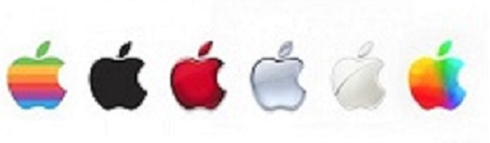

iPhone8与iPhone7的正脸一致，太空级别铝质设计，前后均为玻璃镜面，防水、防尘，还支持无线充电。背面玻璃机身，可选颜色：金色、银色以及深空灰。
iPhone 8搭载两个性能芯片，两个性能核心，四个高性能核心。采用A11处理器，支持无线充电。配置了新一代A11 Bionic处理器，运行速度比上一代A10处理器快30%，还集成了神经网络引擎。支持Touch ID，还有一个特点是其图形传感器加入了对AR技术的支持
200万像素摄像头，F1.8超大光圈设计，采用全新的镜头模组。配备了全新的视频编码器，拥有更快的视频帧速率，支持拍摄60帧的4K视频和全高清分辨率的慢速视频。